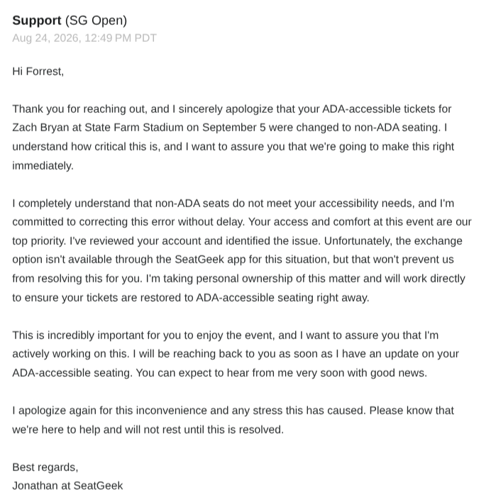
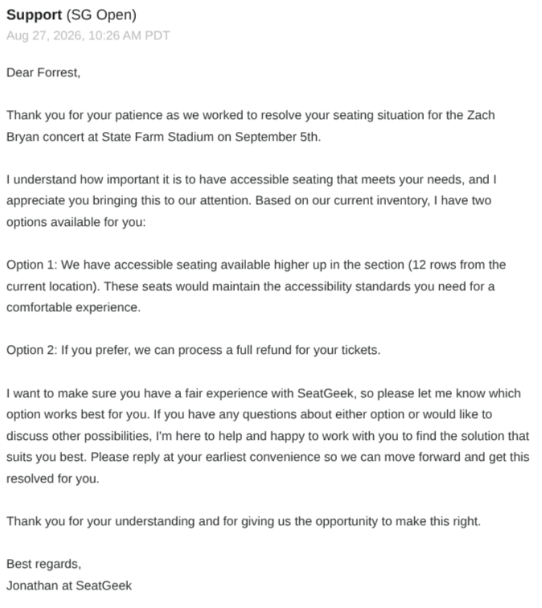
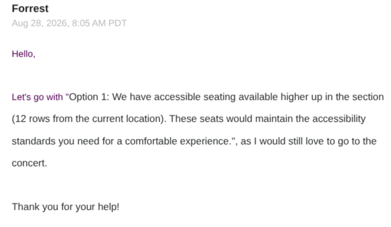
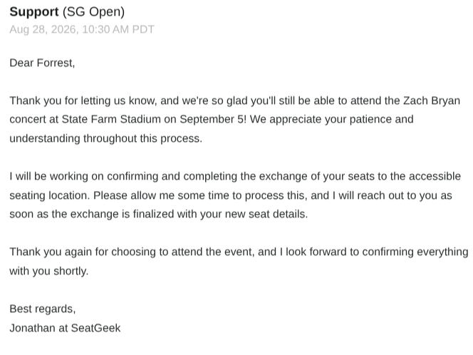
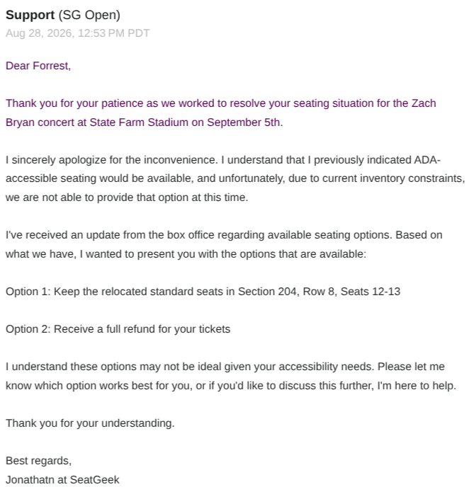
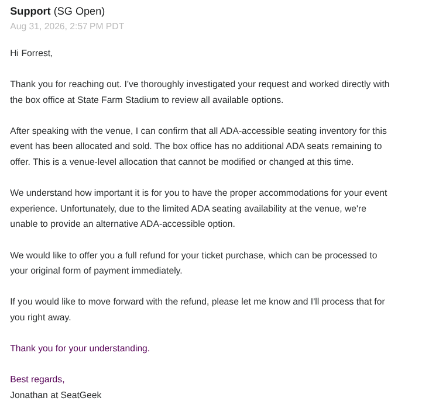
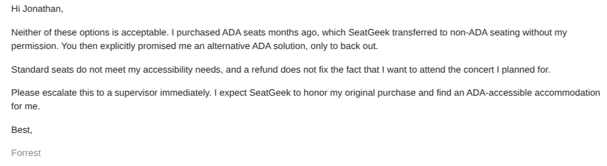

The Evidence Chain
August 24, 2026 • 12:49 PM PDT
Initial ComplaintForrest Falk contacts SeatGeek support after discovering his ADA-accessible tickets for Zach Bryan were changed to non-ADA seating. Support apologizes and promises to "make this right immediately."

August 27, 2026 • 10:26 AM PDT
Options PresentedSeatGeek presents two options: ADA seating 12 rows up (Option 1) or full refund (Option 2). Forrest selects Option 1 to keep his accessible seats.

August 28, 2026 • 8:05 AM PDT
Customer ConfirmationForrest confirms his selection of Option 1 (ADA seating 12 rows up) and thanks Jonathan for the help.

August 28, 2026 • 10:30 AM PDT
Support ConfirmationSeatGeek confirms processing the ADA seat exchange after Forrest selects Option 1.

August 28, 2026 • 12:53 PM PDT
The Bait-and-SwitchSeatGeek reneges on the promise, citing "inventory constraints" and offering only: keep non-ADA seats in Section 204 Row 8 Seats 12-13, or receive a refund. This is the bait-and-switch.

August 30, 2026 • Time Unknown PDT
Customer Follow-UpForrest replies that neither option is acceptable, reiterating that he purchased ADA seats months ago and SeatGeek transferred them without permission. He demands escalation to a supervisor and an ADA-accessible accommodation.

August 31, 2026 • 2:57 PM PDT
Final ResponseSeatGeek confirms that after investigating with the box office, all ADA-accessible seating inventory for the event has been allocated and sold. They offer only a full refund as a solution.

The Full Story
On August 24, 2026, Forrest Falk purchased ADA-accessible tickets for the Zach Bryan concert at State Farm Stadium scheduled for September 5, 2026. Shortly after purchase, SeatGeek changed these tickets to non-ADA seating without his consent.
When Forrest contacted SeatGeek support, representatives apologized profusely and promised to immediately correct the error, presenting two viable options: accessible seating 12 rows higher in the same section, or a full refund. Forrest chose to keep the accessible seating option, confirming his selection on August 28th.
Just hours later, SeatGeek reversed course, claiming "inventory constraints" made the promised accessible seating unavailable. They offered only two unacceptable alternatives: keep the inferior non-ADA seats, or receive a refund.
Forrest rejected both options, explaining that standard seats don't meet his accessibility needs and a refund doesn't compensate for the lost concert experience he had planned for months.
SeatGeek then conducted a final investigation with the venue box office and confirmed that all ADA-accessible seating for the event had been allocated and sold, leaving only a refund as an option.
This constitutes a clear bait-and-switch: advertising an accessible accommodation, securing the customer's commitment based on that promise, then withdrawing the accommodation when it became inconvenient to provide.
The Americans with Disabilities Act requires equal access to entertainment venues. By revoking ADA seating after promising it, SeatGeek violated both the spirit and potentially the letter of accessibility laws.
This investigation documents the complete email exchange, revealing a pattern of customer service failure that prioritizes operational convenience over accessibility rights.
Take Action
If you've experienced similar accessibility issues with SeatGeek or other ticket vendors, share your story.
Share your story See Reddit Discussions